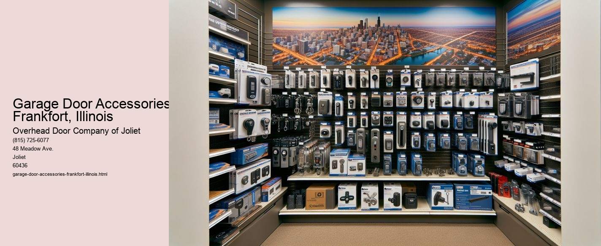

Serving Joliet, IL and surrounding Will County communities including:
Authorized Dealer for Overhead Door™ Openers and Accessories.

The Importance of Garage Door Accessories in Frankfort, Illinois
Nestled in the heart of Will County, Frankfort, Illinois, is a charming village known for its rich history, scenic landscapes, and thriving community spirit. As residents of this vibrant town continue to enhance their homes, one aspect that often goes overlooked is the garage door and its accessories. While the garage door itself serves a practical purpose, the right accessories can significantly enhance its functionality, security, and aesthetic appeal.
Garage doors are a vital component of any home, providing security and convenience for homeowners in Frankfort. However, to maximize their utility, garage door accessories play an essential role.
One of the most critical accessories for garage doors is the automatic opener. In Frankfort, where winters can be particularly harsh, the convenience of an automatic garage door opener cannot be overstated.
Safety is another paramount concern for any homeowner, and garage door accessories can significantly enhance this aspect. Safety sensors are essential devices that prevent the door from closing if an object or person is detected in its path. These sensors are particularly important for families with children or pets, ensuring that the garage door remains a safe feature of the home. In addition, battery backup systems are a prudent investment, allowing garage doors to function even during power outages-a common occurrence during Illinois storms.
Aesthetic appeal is yet another reason why garage door accessories are gaining popularity among Frankfort residents. Decorative hardware, such as handles and hinges, can transform a plain garage door into a stylish and cohesive element of a homes exterior. With a range of styles and finishes available, homeowners can customize their garage doors to complement their personal taste and the architectural style of their homes, enhancing curb appeal in the process.
Moreover, insulation accessories are becoming increasingly popular, particularly in a climate like Frankforts. Insulated garage doors help maintain a stable temperature within the garage, reducing energy costs and providing a more comfortable environment for any adjacent living spaces.
In conclusion, garage door accessories are a vital addition to any home in Frankfort, Illinois. From enhancing convenience and safety to improving aesthetics and energy efficiency, these accessories offer a multitude of benefits. As homeowners continue to seek ways to upgrade their living spaces, investing in high-quality garage door accessories is a practical and worthwhile decision. By doing so, they not only protect one of their most valuable assets but also contribute to the overall well-being and functionality of their homes.
Types of Garage Door Openers Elwood, Illinois